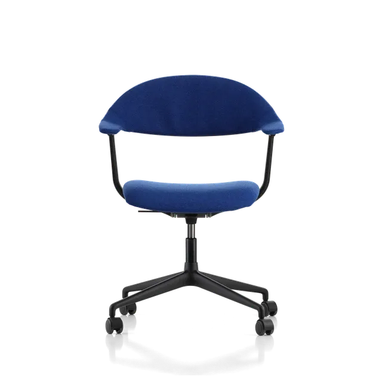
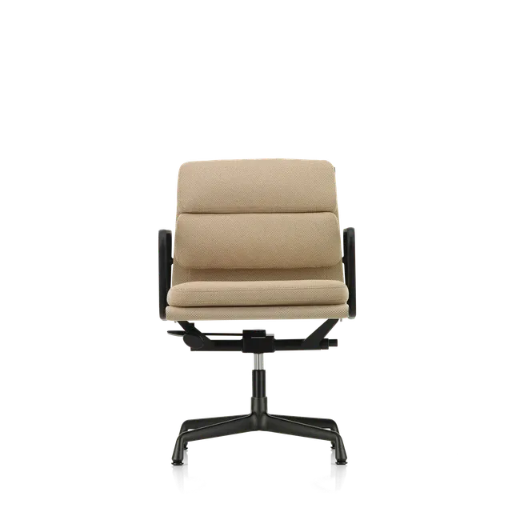
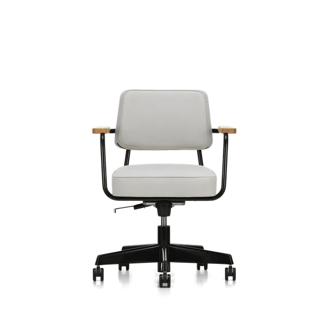
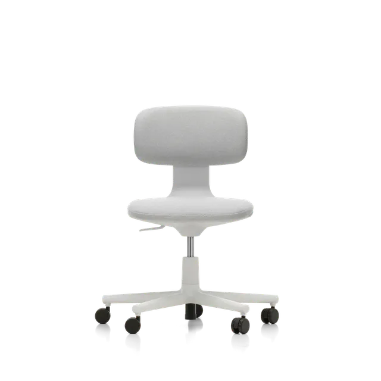
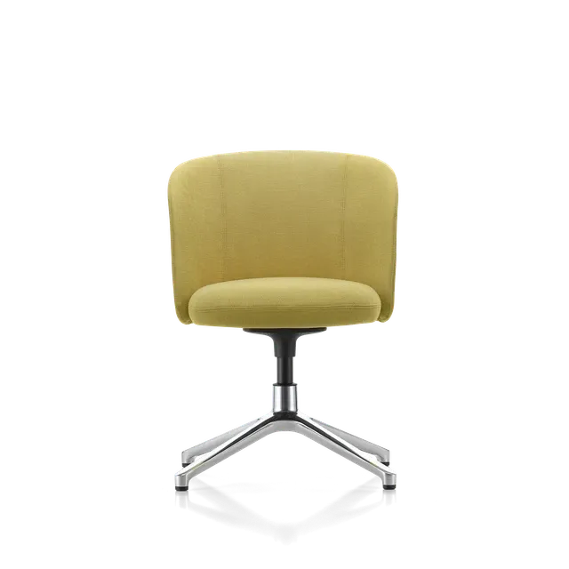
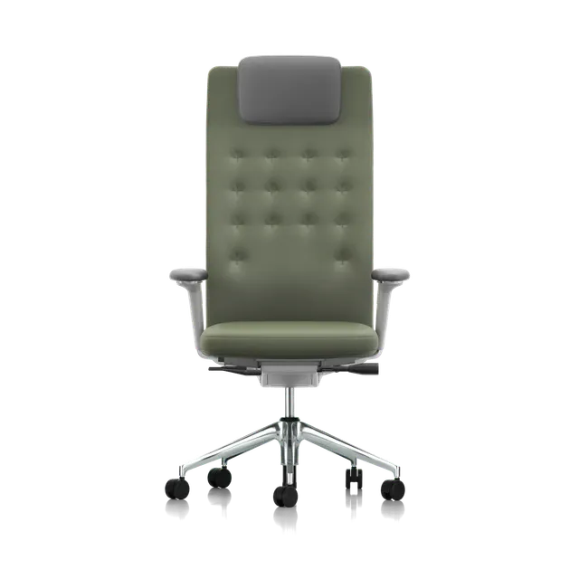

Skip to search filters






What is your average sitting time?
(1/7)
2-4 hours
4-6 hours
6-8 hours
Will you be sharing the chair?
(2/7)
Yes
No
How tall are you?
(3/7)
shorter
taller
What are your sitting positions?
(4/7)
Desk oriented
Upright position
Dynamic sitting
Relaxed, leaned back position
What level of breathability do you prefer?
(5/7)
No extra breathablity
Moderate breathablity
Maximum breathablity
How much padding would you like?
(6/7)
less
more
What are your armrest prefrences?
(7/7)
Fixed
Adustable
No armrests